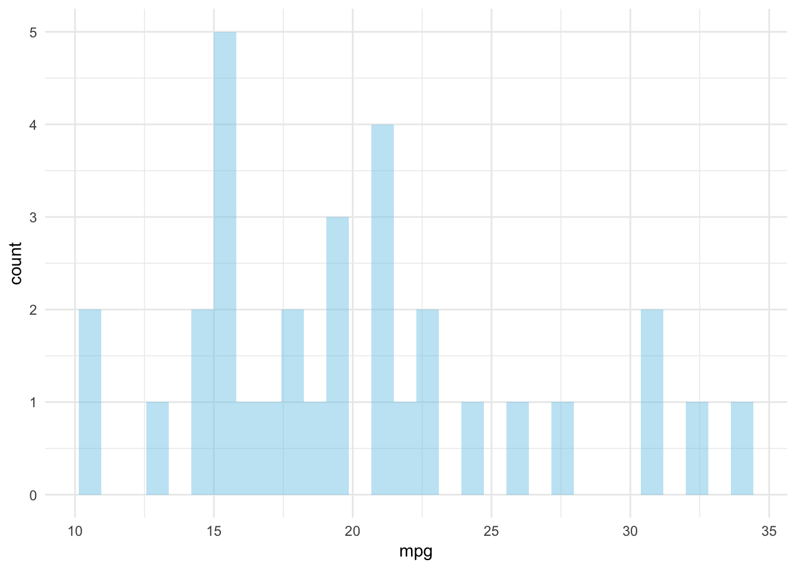

De Dodentocht is ….
Welkom op de resultatenpagina van de Dodentochtstudie
Via deze webpagina wensen we u op de hoogte te houden van de resultaten die volgen uit de Dodentochtstudie (2019). In deze eerste update wensen we u enkele descriptieven te bezorgen: Wie waren onze deelnemers? en Hoe waren ze gemotiveerd om deel te nemen aan de Dodentocht? Als laatste wensen we u op de hoogte te brengen van de verdere plannen. links
Here is the code I used to make this paragraph:
R markdown allows to easily format your text. You can add [links](www.r-graph-gallery.com), write in **bold** or *italic*. This is very well explained in the [Rstudio cheatsheet](https://www.rstudio.com/wp-content/uploads/2015/02/rmarkdown-cheatsheet.pdf).Add an horizontal line by adding 3 stars:
***Specify the caption of your figure in the chunk header. Example:
{r, fig.align="center", fig.width=6, fig.height=6, fig.cap="Figure: Here is a really important caption."}library(foreign)
library(psych)
library(ggplot2)
library(nlme) #for mixed effects models
library(reghelper)
library(ggthemes)
library(gridExtra)
library(grid)
library(ggplot2)
library(lattice)
datamotivatie <- read.spss("/Users/joachimwaterschoot/Downloads/PRE_TIJDENS_POST_doto_EM1_longmotivation.sav",
use.value.labels = FALSE,
to.data.frame=TRUE)
library(dplyr)
library(forcats)
library(ggridges)
library(devtools)
library(ggthemr)
levels(datamotivatie$Index1)[1] <- "plezier en interesse"
levels(datamotivatie$Index1)[2] <- "anderen"
levels(datamotivatie$Index1)[3] <- "nuttig en zinvol"
levels(datamotivatie$Index1)[4] <- "plicht"
datamotivatie$Index1 <- factor(datamotivatie$Index1, levels = c('plezier en interesse','nuttig en zinvol','plicht','anderen'))
ggthemr("flat")
datamotivatie %>%
mutate(motivation = fct_rev(as.factor(Index1))) %>%
ggplot(aes(y = motivation,fill=motivation)) +
geom_density_ridges(
aes(x = trans1),
alpha = .9, color = "white", from = 1, to = 5,scale=0.9
) +
labs(
x = "Score",
y = "Type motivatie",
title = "Motivatie voor deelname, vooraf",
subtitle = "Ruwe verdeling per motivatietype (n = 1083)",
caption = "Joachim Waterschoot | Source: Universiteit Gent"
) +
scale_y_discrete(expand = c(0.01, 0)) +
scale_x_continuous(expand = c(0.01, 0)) +
scale_fill_cyclical(
values = c("#2F3C4D"),
guide = "none"
) +
theme(text=element_text(size=16, family="PT Sans Narrow"))Figure: Here is a really important caption.
Change the black default caption using CSS. Adding this code in your style.css file.
<style>
p.caption {
font-size: 0.9em;
font-style: italic;
color: grey;
margin-right: 10%;
margin-left: 10%;
text-align: justify;
}
</style>Figure: Here is a really important caption, customized to be grey and in italic.
Since R Markdown use the bootstrap framework under the hood. It is possible to benefit its powerful grid system. Basically, you can consider that your row is divided in 12 subunits of same width. You can then choose to use only a few of this subunits.
Here, I use 3 subunits of size 4 (4x3=12). The last column is used for a plot. You can read more about the grid system here. I got this result showing the following code in my R Markdown document.

Code to get this result:
<div class = "row">
<div class = "col-md-4">
<br><br>Since R Markdown use the [bootstrap framework](https://getbootstrap.com/docs/4.0/layout/grid/) under the hood. It is possible to benefit its powerful grid system. Basically, you can consider that your row is divided in 12 subunits of same width. You can then choose to use only a few of this subunits.
</div>
<div class = "col-md-4">
<br><br>Here, I use 3 subunits of size 4 (4x3=12). The last column is used for a plot. You can read more about the grid system [here](bootstrap grid system). I got this result showing the following code in my R Markdown document.
</div>
<div class = "col-md-4">
``{r, message=FALSE, echo=FALSE}
ggplot( mtcars, aes(x=mpg)) + geom_histogram(fill="skyblue", alpha=0.5) + theme_minimal()
``
</div>
</div>